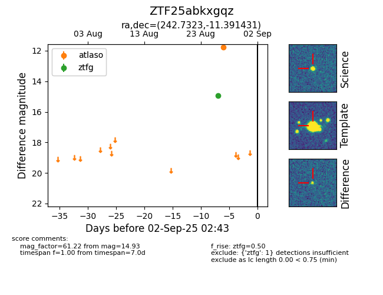

FINK: ZTF25abkxgqz
Lasair: ZTF25abkxgqz
ALeRCE: ZTF25abkxgqz
ZTF25abkxgqz (ztf,fink)
equatorial (ra, dec) = (242.7323,-11.39143)
galactic (l, b) = (1.1802,+28.17879)

last atlaso=11.78, ztfg=14.93
1 atlaso, 1 ztfg detections